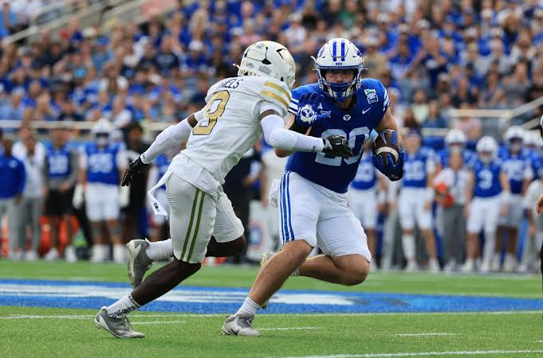

-
Introduction
BYU Football had an incredible season last year, yet didn't quite make it to the playoffs. Normally, I would say work harder and hope they take this to drive them to become better. However, this time was different. I believe the cougars deserved to make it in the playoffs but were snubbed.
-

BYU's Resume for the 2025 Season:
To put it into perspective, here are some of BYU's accomplishments last season:
- Before losing the Texas Tech in the Big 12 Conference Championship game BYU was number 6 in strength of record according to ESPN. After their loss they then dropped to number nine although it is important to note that most top 12 teams did not play in a conference championship game.
- Additionally we have the 23rd hardest strength of schedule, better than the likes of Indiana, Ohio State, Texas Tech, Ole Miss, Miami, and Notre Dame.
- If that wasn't enough we also are one of two teams to win on the road against 4 or more bowl-eligible teams
- After this, BYU became the only 11-1 team to not make the CFB Playoffs.
To be fair, we did win some games close earlier in the season. But we also had a freshman quarterback who was promoted just before the season started. If you look at the trend after the Utah game with exception to Texas Tech, a top 4 team, we beat all of our teams but double digits. We could have scored even more, but Coach Kalani purposely slows it downs and eats the clock after we are ahead by a certain point so that is one reason we don't get as many style points.
-
Chart

Here we can see the relationship between the top 12 team's strength of schedule and strength of record. The best quadrants are the bottom left quadrant, then the upper left, then the bottom right, then finally the upper right.
While BYU isn't in the best quadrant, we can see that they are in the upper left with Alabama and Oklahoma. Meanwhile we see how Notre Dame and Miami, Miami of which made it into the playoffs, are clearly in the worst position compared to all of the other teams.
-
So...Why Didn't They Make the Cut?
Well there are multiple reasons involved and to be honest we can't know why exactly since the selection committee is made up of multiple people, each with their own lines of reasoning, perspectives, and biases. However, here are a few things to consider.
-
SEC Bias
While I agree that the SEC is one of the top dogs in College Football and is a stronger conference than the Big 12, there is a strange reverance for these teams. Why is that? Like why is it BYU, Ohio State, and Virgina all dropped after losing their conference games are punished, except Alabama who is got blown out and even had negative yards?
One reason is because of it's history as a great program. But it also might have a lot to do with ESPN. Here's some of the facts:
- ESPN owns the exclusive television and streaming rights to most SEC teams. This means ESPN literally makes more money for every SEC team that sneaks into the playoffs.
- While ESPN does not select teams, the narratives it pushes heavily shape public perception around which teams are good.
Notice how BYU was ignored in the discussions? ESPN would literally talk more about SEC teams BEHIND BYU as if teams with more losses deserved to be in over the cougars.
On top of that, the chair of the playoff selection committee is from the SEC and many critize his vague answers.
-
Public Perception of BYU
Historically, BYU hasn't been a juggernaut. While they have been steadily rising in college football, many view BYU as average at best. On top of that, many view the Big 12 as a weaker conference. Really, the public view on teams in the Big 12 and ACC that haven't been in the spotlight or have flashy brands are viewed as the little brothers to the SEC and Big Ten (who both do deserve the title as the top conferences).
However, just because a team is in a less competive conference doesn't mean they can't compete against the best of the best. Look at Miami, who barely made it to the CFB Playoffs. They ended up making it to the championship! Despite being in what I personally think is the weakest of the power 4 conferences, they beat two SEC teams and Ohio State. Plus they were the only team that actually competed against Indiana in the playoffs.
-
Utah's Atheletic Director was on the Commitee
I feel like this speaks for itself. I think Mark Harlan's reaction after BYU beat Utah two seasons ago shows that pettiness isn't exactly above him.
-
-
Conclusion
To wrap things up, I believe that your actions should be louder than perception. Just because ESPN and the Commitee were more focused on narrative over performance doesn't mean their decision was the correct one. We can't change the past, but we can look at examples like this and think to ourselves, how can we fix this? I am no expert, but some things that might help is expanding the playoffs to 16-24 teams or moving to a more analytical point system rather than subjective committee based one. You can still have a committee to make small tweaks if appropriate, but it should be more facts than feelings.
For more information on the subject, check out this video!